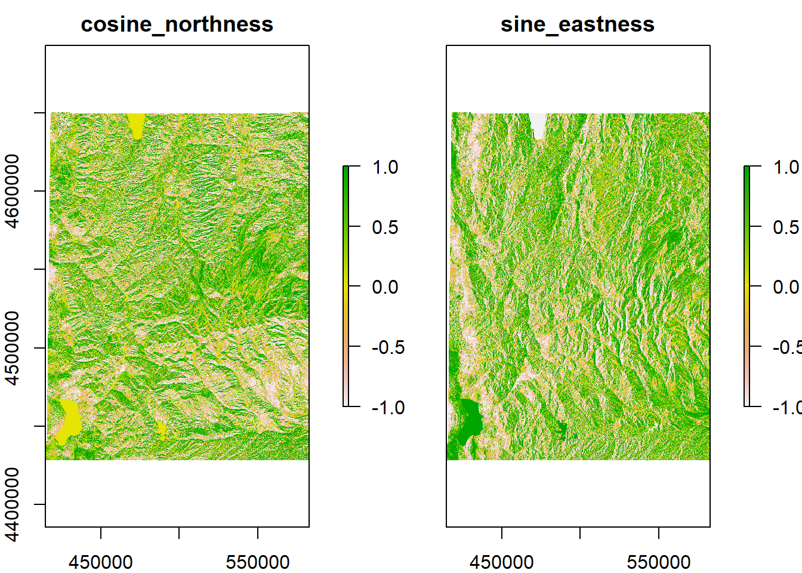

Chapter 4 Spatial Analysis
Now let’s do some analysis with the data we’ve acquired already:
- Sites point data
sites_sf - Utah freeways
fwy_sf_proj
We also have some data that I’ve included in the exercises portion of the “worksheet”: a different elevation + snow raster stack (this one is in the NW corner of Utah), a set of plots as a point feature, and a polygon feature of boundaries in Utah and who manages them:
elev_snow_stk## class : RasterStack
## dimensions : 7401, 5606, 41490006, 3 (nrow, ncol, ncell, nlayers)
## resolution : 30, 30 (x, y)
## extent : 414639.5, 582819.5, 4428230, 4650260 (xmin, xmax, ymin, ymax)
## crs : +proj=utm +zone=12 +datum=NAD83 +units=m +no_defs
## names : elevation, swe, snow_depth
## min values : 1279.897, 0.000, 0.000
## max values : 4111.6, 1108.0, 3196.0plot(elev_snow_stk)head(plots_sf)## Simple feature collection with 6 features and 1 field
## Geometry type: POINT
## Dimension: XY
## Bounding box: xmin: 499102.7 ymin: 4528029 xmax: 560979.8 ymax: 4622779
## Projected CRS: NAD83 / UTM zone 12N
## Plots geometry
## 1 A POINT (537889.7 4593484)
## 2 B POINT (560979.8 4586311)
## 3 C POINT (544094.8 4548330)
## 4 D POINT (522850.5 4556870)
## 5 E POINT (551238.5 4528029)
## 6 F POINT (499102.7 4622779)manage_sf <- st_read("data/Exercises/UT_land_management", "UT_land_management",
quiet = T) %>%
st_transform(crs = 26912)
manage_sp <- as(manage_sf, "Spatial")## Simple feature collection with 6 features and 5 fields
## Geometry type: MULTIPOLYGON
## Dimension: XY
## Bounding box: xmin: 388066 ymin: 4410117 xmax: 403492.2 ymax: 4414856
## Projected CRS: NAD83 / UTM zone 12N
## OBJECTID OWNER AGENCY ADMIN DESIG geometry
## 1 1 Federal BLM BLM Bankhead Jones MULTIPOLYGON (((388854 4411...
## 2 2 Federal BLM BLM Bankhead Jones MULTIPOLYGON (((394528.1 44...
## 3 3 Federal BLM BLM Bankhead Jones MULTIPOLYGON (((388473.6 44...
## 4 4 Federal BLM BLM Bankhead Jones MULTIPOLYGON (((399793.3 44...
## 5 5 Federal BLM BLM Bankhead Jones MULTIPOLYGON (((389300.1 44...
## 6 6 Federal BLM BLM Bankhead Jones MULTIPOLYGON (((403492.2 44...Let’s plot one of the rasters with our sites point vector and Utah highways line vector. To plot just one raster layer in a stack we can either index it with double brackets or with the name:
# these are different ways to get the same raster layer
elev_snow_stk[[1]]## class : RasterLayer
## band : 1 (of 3 bands)
## dimensions : 7401, 5606, 41490006 (nrow, ncol, ncell)
## resolution : 30, 30 (x, y)
## extent : 414639.5, 582819.5, 4428230, 4650260 (xmin, xmax, ymin, ymax)
## crs : +proj=utm +zone=12 +datum=NAD83 +units=m +no_defs
## source : elev_snow_nw_stack.tif
## names : elevation
## values : 1279.897, 4111.6 (min, max)elev_snow_stk$elevation## class : RasterLayer
## band : 1 (of 3 bands)
## dimensions : 7401, 5606, 41490006 (nrow, ncol, ncell)
## resolution : 30, 30 (x, y)
## extent : 414639.5, 582819.5, 4428230, 4650260 (xmin, xmax, ymin, ymax)
## crs : +proj=utm +zone=12 +datum=NAD83 +units=m +no_defs
## source : elev_snow_nw_stack.tif
## names : elevation
## values : 1279.897, 4111.6 (min, max)plot(elev_snow_stk$elevation)
lines(fwy_sp_proj, lwd = 2) # lines() will plot the polyline on top of the plot (instead of drawing a new plot)
points(sites_sp_proj, pch = 16) # points() will do the same as lines() except with point data
points(plots_sp, pch = 3)(This can also be done with ggplot using as.data.frame but in this case the raster may be too large for R to convert to a dataframe and plot)
Let’s start on some analysis and computations that we can run on these data.
4.1 Selecting Attributes
Perhaps you have vector data and you want to select only certain attributes or attributes that reach a focal threshold. To do so we need to set up a logical statement, and we can do this in base R or in tidyverse.
Let’s say we want to select boundaries that are operated by BLM. In the shapefile of management boundaries, this information is located in the column “AGENCY”
unique(manage_sf$AGENCY)## [1] "BLM" "BR" "DOD" "DOE" "NPS" "USFS" "USFWS"
## [8] "Private" "DNR" "OS" "SITLA" "UDOT" "Tribal"In base R we can use the function which and in tidyverse we can use the function filter
# base R
blm_boundary <- manage_sf[which(manage_sf$AGENCY == "BLM"), ] # you can do this with sp objects too
# tidyverse
blm_boundary <- manage_sf %>% # you cannot do this with sp objects
filter(AGENCY == "BLM")
ggplot() +
geom_sf(data = manage_sf, col = "grey", size = 0.1) +
geom_sf(data = blm_boundary, fill = "red", col = "grey30",
alpha = 0.8, size = 0.1)Using these functions, you can set up any logical statement using ==, %in%, >, >=, <, <=, or ! and select for the specific attributes you need.
4.2 Select features by location
Let’s make select the management boundaries based on if they are intersected by a major highway. For sf we’ll use the function st_intersect and for sp we’ll use
manage_roads <- st_intersects(fwy_sf_proj, manage_sf) # the first argument is the target shape and the second argument the shape we're selecting from
class(manage_roads)## [1] "sgbp" "list"The output is an sgbp object, or “Sparse Geometry Binary Predicate”. Basically it returns a list of vectors of integers, which refer to the indices of each polygon that intersects.
dim(manage_roads)## [1] 1849 14888nrow(fwy_sf_proj)## [1] 1849nrow(manage_sf)## [1] 14888So the dimensions of this list are the the number of rows in the target shape (the highways) and the number of rows in the intersecting shape (the management boundaries). If we wanted to know the specifc index of a specific road that intersected with a management boundary, it would be useful to keep all of these indices seperate. Since we just want to know which boundaries intersect a road, we can collapse this whole list together.
manage_roads_index <- unique(unlist(manage_roads)) # just pull the unique indices
manage_roads_intersect <- manage_sf[manage_roads_index, ]
ggplot() +
geom_sf(data = manage_sf, col = "grey", size = 0.1) +
geom_sf(data = manage_roads_intersect, fill = "red", col = "grey30",
alpha = 0.8, size = 0.1) +
geom_sf(data = fwy_sf_proj, col = "black", size = 1)If you look at the help file for ?st_intersects, you’ll see there are a lot of different functions that select features based on another feature.
4.3 Joining Attributes
Let’s load in a table of some data collected at each plot
## Plots Species Date AboveGroundBiomass MeanHeight PercentCover
## 1 A R. maritimus 2021-05-01 27.61158 3.7257421 77.75151
## 2 A B. cernua 2021-05-01 13.18637 4.5355917 65.06243
## 3 A S. acutus 2021-05-01 68.84413 1.8172373 98.39445
## 4 B R. maritimus 2021-05-02 59.58161 1.2949173 28.84727
## 5 B B. cernua 2021-05-02 87.44708 0.7372426 48.40372
## 6 B S. acutus 2021-05-02 35.32842 2.6436731 95.73950Let’s join this table to the Plots feature so we could do some spatial analysis and mapping of the collected data. To join two tables together, we need to input the two tables and the name of the column that exists in both tables (so the join function knows how to match attributes together). In this case, that would be the Plots column.
head(plots_sf$Plots)## [1] "A" "B" "C" "D" "E" "F"head(plot_data$Plots)## [1] "A" "A" "A" "B" "B" "B"We can use the tidyverse’s join functions. (If you don’t know how joins work, I would recommend looking at the help file by typing ?left_join in the console)
plots_join <- left_join(plots_sf, plot_data, by = "Plots")
head(plots_join)## Simple feature collection with 6 features and 6 fields
## Geometry type: POINT
## Dimension: XY
## Bounding box: xmin: 537889.7 ymin: 4593484 xmax: 537889.7 ymax: 4593484
## Projected CRS: NAD83 / UTM zone 12N
## Plots Species Date AboveGroundBiomass MeanHeight PercentCover
## 1 A R. maritimus 2021-05-01 27.61158 3.7257421 77.75151
## 2 A B. cernua 2021-05-01 13.18637 4.5355917 65.06243
## 3 A S. acutus 2021-05-01 68.84413 1.8172373 98.39445
## 4 A R. maritimus 2021-05-08 42.73997 0.5477968 65.87027
## 5 A B. cernua 2021-05-08 68.90326 1.9793263 11.35618
## 6 A S. acutus 2021-05-08 44.42221 0.4002126 90.92433
## geometry
## 1 POINT (537889.7 4593484)
## 2 POINT (537889.7 4593484)
## 3 POINT (537889.7 4593484)
## 4 POINT (537889.7 4593484)
## 5 POINT (537889.7 4593484)
## 6 POINT (537889.7 4593484)Great! At this point you could then do some spatial analysis based on location, or make a map based on average biomass, for example. However, that’s outside the scope of this workshop.
Joining two tables together is a valuable tool to know, not just for GIS but for any data management.
4.4 Cropping
Cropping a vector
If you noticed earlier, the highway polyline runs outside of the elevation raster. What if we want to crop the vector so that it falls only within the raster?
For sf we’ll use the function st_crop (which requires an object of class sf or sfc and the min/max x & y extent we want to crop the feature to). For sp we’ll use the function crop. (crop is actually in the raster package, but remember that raster is dependent on sp? That means that some raster functions can be used on Spatial* objects too). For crop we need the object we’re cropping and the extent we’re cropping to (or an object that an extent can be derived from, in this case the raster itself)
# sf:
# First we need the extent of the raster that is compatible with sf. For that we'll use st_bbox()
rast_ext <- st_bbox(extent(elev_snow_stk))
rast_ext## xmin ymin xmax ymax
## 414639.5 4428229.8 582819.5 4650259.8fwy_crop_sf <- st_crop(fwy_sf_proj, rast_ext)
# sp:
fwy_crop_sp <- crop(fwy_sp_proj, elev_snow_stk)Cropping a raster
We can also easily crop a raster. Let’s say we wanted to crop our raster stack down to only the area around our site that’s in the Uintas
plot(elev_snow_stk$elevation)
points(sites_sp_proj, pch = 16)Figure 4.1: the Uintas are that high-elevation mountain range in the middle right of this map
First we need to find out what site number that is. We’ll use the text() function. There is a text() function for base R plotting, but the raster package adapted that function to plot text from rasters and Spatial* objects. Let’s use that function, so we need to specify which package it comes from using raster::
plot(elev_snow_stk$elevation)
raster::text(sites_sp_proj, labels = "Site", halo = T)Site 8! Let’s filter our spatial data to just this site.
# base R
site_8 <- sites_sf_proj[which(sites_sf_proj$Site == 8), ] # remember that you can use this method for sp objects too
# tidyverse
site_8 <- sites_sf_proj %>%
filter(Site == 8)
site_8## Simple feature collection with 1 feature and 1 field
## Geometry type: POINT
## Dimension: XY
## Bounding box: xmin: 564670.6 ymin: 4513862 xmax: 564670.6 ymax: 4513862
## Projected CRS: NAD83 / UTM zone 12N
## Site geometry
## 1 8 POINT (564670.6 4513862)But we don’t want to crop the raster down to a single point, so let’s first make a buffer (5kmX5km) around this specific site. We’ll use st_buffer() to do so.
buffer <- st_buffer(site_8, dist = 5000) # units are in meters
buffer## Simple feature collection with 1 feature and 1 field
## Geometry type: POLYGON
## Dimension: XY
## Bounding box: xmin: 559670.6 ymin: 4508862 xmax: 569670.6 ymax: 4518862
## Projected CRS: NAD83 / UTM zone 12N
## Site geometry
## 1 8 POLYGON ((569670.6 4513862,...ggplot() +
geom_sf(data = buffer) +
geom_sf(data = site_8, col = "red", size = 2) +
coord_sf(datum = st_crs(26912)) # this plots the axes to UTM coordinates instead of latlong coordinatesTo crop a raster, we’ll use the same function we used to crop a Spatial* object: crop. Remember that I said earlier that any function we perform on a stack of rasters will run for every raster in that stack!
Earlier when we used crop, we could just put in the object itself and the function would automatically crop to the extent of that object. But that only works for objects of class Raster*, Spatial*, or Extent. Because our buffer is of class sf, we can’t just put the object itself in. Instead we need to put in its extent (or you could convert the buffer to a Spatial* object)
stack_crop <- crop(elev_snow_stk, extent(buffer))
stack_crop## class : RasterBrick
## dimensions : 333, 334, 111222, 3 (nrow, ncol, ncell, nlayers)
## resolution : 30, 30 (x, y)
## extent : 559659.5, 569679.5, 4508870, 4518860 (xmin, xmax, ymin, ymax)
## crs : +proj=utm +zone=12 +datum=NAD83 +units=m +no_defs
## source : memory
## names : elevation, swe, snow_depth
## min values : 2714.15, 148.00, 680.00
## max values : 3811.196, 427.000, 1453.000plot(stack_crop)4.5 Extract Raster Values
What if we need to get data from our rasters at our specific site locations? We can use the function extract().
Let’s load a landcover raster so we can classify the habitat types of our sites
landcover <- raster("Data/Examples/landcover.tif")
landcover## class : RasterLayer
## dimensions : 18675, 14838, 277099650 (nrow, ncol, ncell)
## resolution : 30, 30 (x, y)
## extent : 229319.6, 674459.6, 4094414, 4654664 (xmin, xmax, ymin, ymax)
## crs : +proj=utm +zone=12 +datum=NAD83 +units=m +no_defs
## source : landcover.tif
## names : landcover
## values : 137, 584 (min, max)plot(landcover)
raster::text(sites_sp_proj, labels = "Site", halo = T)extract returns a vector whose indices match the indices of the spatial object. We could leave it as a vector, or we could automatically attach it to the dataframe using $
sites_sf_proj$land_value <- raster::extract(landcover, sites_sp_proj)
sites_sf_proj## Simple feature collection with 10 features and 2 fields
## Geometry type: POINT
## Dimension: XY
## Bounding box: xmin: 287581.9 ymin: 4157301 xmax: 656513.7 ymax: 4595255
## Projected CRS: NAD83 / UTM zone 12N
## Site geometry land_value
## 1 1 POINT (516801.7 4188305) 547
## 2 2 POINT (470663.6 4322073) 491
## 3 3 POINT (656513.7 4212358) 561
## 4 4 POINT (311534.1 4398520) 498
## 5 5 POINT (454023.6 4595255) 187
## 6 6 POINT (455210.1 4289185) 151
## 7 7 POINT (420826.5 4351553) 457
## 8 8 POINT (564670.6 4513862) 152
## 9 9 POINT (287581.9 4469956) 458
## 10 10 POINT (377495.7 4157301) 158Ok but what do these numbers mean? Our landcover raster is a categorical raster, so these numbers aren’t actually real numbers but represent a habitat type. Fortunately we have a dataframe indicating what these numbers mean.
land_info <- read.csv("Data/Examples/landcover_info.csv")
head(land_info)[,1:5]## Value ClassCode ClassName SubClassCode SubClassName
## 1 1 1 Forest & Woodland 1.A Tropical Forest & Woodland
## 2 2 1 Forest & Woodland 1.A Tropical Forest & Woodland
## 3 3 1 Forest & Woodland 1.A Tropical Forest & Woodland
## 4 4 1 Forest & Woodland 1.A Tropical Forest & Woodland
## 5 5 1 Forest & Woodland 1.A Tropical Forest & Woodland
## 6 6 1 Forest & Woodland 1.A Tropical Forest & WoodlandThe column “Value” corresponds to the cell value we extracted from the raster. We can use what we learned earlier how to join two tables together, but first we need to make sure the ID column (“Value”) for both tables are named the same.
sites_sf_land <- sites_sf_proj %>%
rename(Value = land_value) %>% # rename the column so it matches in both tables
left_join(land_info, by = "Value") # join by the column "Value"
head(sites_sf_land)[,1:6]## Simple feature collection with 6 features and 6 fields
## Geometry type: POINT
## Dimension: XY
## Bounding box: xmin: 311534.1 ymin: 4188305 xmax: 656513.7 ymax: 4595255
## Projected CRS: NAD83 / UTM zone 12N
## Site Value ClassCode ClassName SubClassCode
## 1 1 547 6 Open Rock Vegetation 3.B
## 2 2 491 3 Desert & Semi-Desert 3.B
## 3 3 561 9 Introduced & Semi Natural Vegetation 9.A
## 4 4 498 3 Desert & Semi-Desert 3.B
## 5 5 187 1 Forest & Woodland 1.B
## 6 6 151 1 Forest & Woodland 1.B
## SubClassName geometry
## 1 Cool Semi-Desert Scrub & Grassland POINT (516801.7 4188305)
## 2 Cool Semi-Desert Scrub & Grassland POINT (470663.6 4322073)
## 3 Introduced & Semi Natural Vegetation POINT (656513.7 4212358)
## 4 Cool Semi-Desert Scrub & Grassland POINT (311534.1 4398520)
## 5 Temperate & Boreal Forest & Woodland POINT (454023.6 4595255)
## 6 Temperate & Boreal Forest & Woodland POINT (455210.1 4289185)Awesome!
4.6 Distance
Let’s say we needed to know how far from a major road each of our sites are. We’ll use the function st_distance for our sf objects. We simply need to input the focal feature (the sites) and the feature
dist <- st_distance(sites_sf_proj, fwy_sf_proj)
dim(dist)## [1] 10 1849What did this do? Why are there so many columns? Remember that our Utah highways feature is a polyline, meaning it’s a line of lines. If we look at the dimensions of the highways feature:
nrow(fwy_sf_proj)## [1] 1849There are 1849 lines (i.e. roads) that make up this whole feature. So st_distance found the distance for each site (the number of rows) for every road (the number of columns). This could be useful information, but presumably we want just the distance of the closest road. To find that distance, we’ll have to do some data frame manipulation.
dist_df <- as.data.frame(dist)
dist_df[1:5, 1:5]## V1 V2 V3 V4 V5
## 1 338437.85 [m] 263692.1 [m] 377476.0 [m] 390771.33 [m] 362734.97 [m]
## 2 197203.45 [m] 122621.7 [m] 236789.3 [m] 249791.82 [m] 223192.16 [m]
## 3 381617.18 [m] 312604.5 [m] 413268.8 [m] 427894.89 [m] 393571.41 [m]
## 4 158689.76 [m] 139533.6 [m] 192053.6 [m] 196516.46 [m] 196519.69 [m]
## 5 88374.99 [m] 153727.1 [m] 50524.9 [m] 48850.39 [m] 52407.25 [m]colnames(dist_df) <- fwy_sf_proj$UNIQUE_ID
dist_df <- dist_df %>%
mutate(Site = sites_sf_proj$Site) %>% # add a column for Sites
relocate(Site, .before = colnames(dist_df)[1]) # move to the front of the dataframe
dist_df[1:5, 1:5]## Site 12TVL21421309_I-80 EB_FWY 12TVK44214181_I-15 NB_FWY
## 1 1 338437.85 [m] 263692.1 [m]
## 2 2 197203.45 [m] 122621.7 [m]
## 3 3 381617.18 [m] 312604.5 [m]
## 4 4 158689.76 [m] 139533.6 [m]
## 5 5 88374.99 [m] 153727.1 [m]
## 12TVL528848324_I-84 WB_FWY 12TVL14996575_I-15 NB_FWY
## 1 377476.0 [m] 390771.33 [m]
## 2 236789.3 [m] 249791.82 [m]
## 3 413268.8 [m] 427894.89 [m]
## 4 192053.6 [m] 196516.46 [m]
## 5 50524.9 [m] 48850.39 [m]dist_df <- dist_df %>%
pivot_longer(cols = -Site, names_to = "Road_Name")
head(dist_df)## # A tibble: 6 x 3
## Site Road_Name value
## <int> <chr> [m]
## 1 1 12TVL21421309_I-80 EB_FWY 338438.
## 2 1 12TVK44214181_I-15 NB_FWY 263692.
## 3 1 12TVL528848324_I-84 WB_FWY 377476.
## 4 1 12TVL14996575_I-15 NB_FWY 390771.
## 5 1 12TVL43954376_I-84 WB_FWY 362735.
## 6 1 12TVL22992231_I-15 NB_FWY 346788.dist_df <- dist_df %>%
group_by(Site) %>%
mutate(Distance = min(value)) %>%
filter(value == Distance) %>%
dplyr::select(-value)
head(dist_df)## # A tibble: 6 x 3
## # Groups: Site [6]
## Site Road_Name Distance
## <int> <chr> [m]
## 1 1 12SWH795644729_I-70 EB_FWY 111639.
## 2 2 12SVH54839499_I-70 WB_FWY 26694.
## 3 3 12SXJ29161112_I-70 EB_FWY 100145.
## 4 4 12SVJ06965812_I-15 SB_FWY 103257.
## 5 5 12TVL12119352_I-15 NB_FWY 41944.
## 6 6 12SVH54609503_I-70 EB_FWY 4126.We could then join this information to our Sites feature
sites_sf_proj <- left_join(sites_sf_proj, dist_df, by = "Site")
head(sites_sf_proj)## Simple feature collection with 6 features and 4 fields
## Geometry type: POINT
## Dimension: XY
## Bounding box: xmin: 311534.1 ymin: 4188305 xmax: 656513.7 ymax: 4595255
## Projected CRS: NAD83 / UTM zone 12N
## Site land_value Road_Name Distance
## 1 1 547 12SWH795644729_I-70 EB_FWY 111639.222 [m]
## 2 2 491 12SVH54839499_I-70 WB_FWY 26693.741 [m]
## 3 3 561 12SXJ29161112_I-70 EB_FWY 100145.037 [m]
## 4 4 498 12SVJ06965812_I-15 SB_FWY 103257.143 [m]
## 5 5 187 12TVL12119352_I-15 NB_FWY 41943.649 [m]
## 6 6 151 12SVH54609503_I-70 EB_FWY 4125.821 [m]
## geometry
## 1 POINT (516801.7 4188305)
## 2 POINT (470663.6 4322073)
## 3 POINT (656513.7 4212358)
## 4 POINT (311534.1 4398520)
## 5 POINT (454023.6 4595255)
## 6 POINT (455210.1 4289185)(Note that if you look at the help file i.e. ?st_distance, there are other functions to calculate geometric measurements for sf objects: st_area and st_length)
4.7 Raster Cell Stats
In my research I often have to perform cell algebra or focal statistics. Maybe you need to know the average elevation or the total herbaceous biomass within a certain area. The way to get these values are with the function cellStats. We simply need to input the raster and the stat function: sum, mean, min, max, sd, or a homemade function. Let’s say we need to calculate the average elevation, SWE, and snow depth within the buffer we made earlier.
cellStats(stack_crop, stat = "mean")## elevation swe snow_depth
## 3281.0344 319.1429 1145.2181Note that there’s an option to include na.rm in the arguments. na.rm = TRUE is the default.
4.8 Calculate Terrain Characteristics
From a DEM (digital elevation model) we can obtain a lot of other rasters that are likely useful in GIS research. The elevation raster we’ve been working with is a DEM. From a DEM we can derive other terrain characteristics :
- Slope: Measurement of “steepness”
- Aspect: Measurements of “Northness” and “Eastness”
- Flow direction of water: the direction of the greatest drop in elevation
- Terrain Ruggedness Index (TRI): the mean of the absolute differences between the value of a cell and the value of its 8 surrounding cells
- Topographic Position Index (TPI): the difference between the value of a cell and the mean value of its 8 surrounding cells
- Roughness: the difference between the maximum and the minimum value of a cell and its 8 surrounding cells
These definitions came from the help file for the function we can use to derive these characteristics: terrain().
slope <- terrain(elev_snow_stk$elevation, opt = "slope", unit = "radians")
aspect <- terrain(elev_snow_stk$elevation, opt = "aspect", unit = "radians")
roughness <- terrain(elev_snow_stk$elevation, opt = "roughness")
terrain_stk <- stack(elev_snow_stk$elevation, slope, aspect, roughness)
terrain_stk## class : RasterStack
## dimensions : 7401, 5606, 41490006, 4 (nrow, ncol, ncell, nlayers)
## resolution : 30, 30 (x, y)
## extent : 414639.5, 582819.5, 4428230, 4650260 (xmin, xmax, ymin, ymax)
## crs : +proj=utm +zone=12 +datum=NAD83 +units=m +no_defs
## names : elevation, slope, aspect, roughness
## min values : 1279.897, 0.000, 0.000, 0.000
## max values : 4111.600098, 1.302171, 6.283185, 279.081787To compute the Northness or Eastness of a cell, we actually have to do one more step to the aspect raster. Aspect is a circular measurement (which is why its units are in degrees or radians), so (if you remember how trigonometry works) to calculate northness and eastness we need to use cosine and sine respectively. Because our units are in radians, we can simply apply the cos() and sin() functions directly to the aspect raster.
aspect_cos <- cos(terrain_stk$aspect)
aspect_sin <- sin(terrain_stk$aspect)
aspect_stk <- stack(aspect_cos, aspect_sin)
names(aspect_stk) <- c("cosine_northness", "sine_eastness")
aspect_stk## class : RasterStack
## dimensions : 7401, 5606, 41490006, 2 (nrow, ncol, ncell, nlayers)
## resolution : 30, 30 (x, y)
## extent : 414639.5, 582819.5, 4428230, 4650260 (xmin, xmax, ymin, ymax)
## crs : +proj=utm +zone=12 +datum=NAD83 +units=m +no_defs
## names : cosine_northness, sine_eastness
## min values : -1, -1
## max values : 1, 1plot(aspect_stk)
4.9 A Note About Loops
Learning all these functions is all well and good, but what if you have to perform them all on multiple features or rasters? Of course, you can always copy and paste, but that can soon become confusing and messy and cause your code to be inefficient. The better way to address this is with loops! for loops and lapply are lifesavers and I use them in all of my code. A previous workshop went into more depth on how to use loops, so I won’t go over them in too much detail. But I do want to show some ways you can use them for GIS applications.
(These code chunks are for demonstration only, these data and directories don’t actually exist)
# Example 1: Load a set of shapefiles and find the area for each
filenames <- list.files(dir) # get a list of shapefile names in a directory
area_list <- c() # create an empty vector for the areas to live in
for(i in 1:length(filenames)){
# load the shapefile
shp <- st_read(filenames[i])
# calculate the area
area <- st_area(shp)
# put the area into the vector
area_list <- c(area_list, area)
}
# -----------------------------------------------------------------------------X
# Example 2: Load a set of shapefiles, generate a buffer for each, and calculate the # mean value of a raster within that buffer and the focal feature
filenames <- list.files(dir) # get a list of shapefile names in a directory
r <- raster(raster_filename) # load a raster
lapply(filenames, function(fn){
# load a shapefile
shp <- st_read(fn)
# generate a 10kmX10km buffer
buffer <- st_buffer(shp, dist = 10000)
# crop the raster to the shape and the buffer
r_shp <- crop(r, extent(shp))
r_buffer <- crop(r, extent(buffer))
# calculate the mean value of the raster within the buffer and the feature
r_shp_mean <- cellStats(r_shp, stat = "mean", na.rm = TRUE)
r_buff_mean <- cellStats(r_shp, stat = "mean", na.rm = TRUE)
# return both means in a list
return(list(r_shp_mean, r_buff_mean))
})
# -----------------------------------------------------------------------------X
# Example 3: Generate a raster of the sum from a set of RasterStacks
# and then save the output raster
filenames <- list.files(dir) # get a list of raster files in a directory
out_names <- paste0(filenames, "_sum")
lapply(1:length(filenames), function(i){
# load RasterStak
stk <- stack(filenames[i])
# create a raster that is the sum of all layers in the stack
sum <- calc(stk, fun = sum)
sum <- sum(stk) # these two operations are equivalent
writeRaster(sum, out_names[i], format = "GTiff")
})
# -----------------------------------------------------------------------------X
# Example 4: Pull the number of zeros in a set of rasters
filenames <- list.files(dir) # get a list of raster files in a directory
lapply(filenames, function(fn){
# load raster
rast <- raster(fn)
# get the number of zeros in the raster
n_0 <- getValues(rast) == 0 %>%
which() %>%
length()
return(n_0)
})Even more efficient would be to run these in parallel, but that is way beyond the scope of this workshop
I hope these functions helped you! The next chapter goes over some ways of obtaining the data we worked on today.